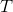
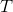
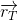
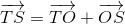
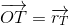
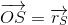
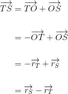
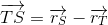

Vectorul de poziţie al unui punct
Definiția G18: Vector de poziție al unui punct dat
Fie punctul  un punct fixat în plan. Dacă considerăm un alt punct  din plan, atunci vectorul
un punct fixat în plan. Dacă considerăm un alt punct  din plan, atunci vectorul  se va numi vector legat sau vectorul de poziție al punctului .
se va numi vector legat sau vectorul de poziție al punctului .
Vom nota vectorul de poziției al punctului prin  .
Reprezentarea grafică a acestui vector o poți vedea în figura de mai jos:
.jpg)
În cele ce urmează, vom exprima vectorii legați cu ajutorul vectorilor de poziție astfel: dacă avem fixat punctul și luăm două puncte distincte din plan și , avem vectorii reprezentați în imaginea de mai jos:
.jpg)
Cu ajutorul regulii triunghiului (prezentată în secțiunea „Adunarea vectorilor”), vom exprima vectorul legat  astfel:
astfel:
 .
Conform Definiției G17: ( Vector de poziție al unui punct dat ) de mai sus, avem că:
, 
respectiv
. 
Rescriem relația , în care folosim relațiile și , de unde obținem:

Așadar, avem:
.